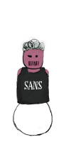

Loading story...
Introduction
Welcome to the 2025 SANS Holiday Hack Challenge: REVENGE OF THE GNOME(s) challenge walkthrough.
This year’s HHC brings a plethora of new topics, including grand challenges provided by Microsoft and Google: defanging IOCs, using SUDO, port discovery, forensic analysis, basic networking, firewall basics, Nmap basics, CURL basics, IDOR challenge, using POCs, Java deserialization, Quantum computing, reverse engineering, hacking SQLI, Linux and PrivEsc, and WebApp Pentesting.
This year's report is styled to resemble the in-game objective console providing a familiar in game feel while reading the write-up.
If you are new to HHC this year listen to Ed Skoudis, Chief Holiday Officer, in the Welcome and Game Orientation video to make the most of this cyber range.
Join us on Discord to chat with other players, share tips, and connect.
https://discord.com/invite/Wbmx92rWW3

Placeholder: This is the MAP page. Place your map or neighborhood overview here.
Music Volume
NPC Dialog Volume
SFX Volume
Music
Auto-read NPC Intro Dialog
SFX
Holiday Hack Orientation
Objective
Paraphrase the in-game objective text here.
Approach
High-level summary of how you solved it.
Steps
- Step one…
- Step two…
Key Commands
# put real commands here
Its All About Defang
Placeholder: Write-up for "Its All About Defang" goes here.
Neighborhood Watch Bypass
Placeholder: Write-up for "Neighborhood Watch Bypass" goes here.
Santa's Gift-Tracking Port Mystery
Placeholder: Write-up for this objective goes here.
Visual Networking Thinger
Placeholder: Write-up for this objective goes here.
Visual Firewall Thinger
Placeholder: Write-up for this objective goes here.
Intro to Nmap
Placeholder: Write-up for this objective goes here.
Blob Storage Challenge (Neighborhood)
Placeholder: Write-up for this objective goes here.
Spare Key
Placeholder: Write-up for this objective goes here.
The Open Door
Placeholder: Write-up for this objective goes here.
Owner
Placeholder: Write-up for this objective goes here.
Retro Recovery
Placeholder: Write-up for this objective goes here.
Mail Detective
Placeholder: Write-up for this objective goes here.
IDORable Bistro
Placeholder: Write-up for this objective goes here.
Dosis Network Down
Placeholder: Write-up for this objective goes here.
Rogue Gnome Identity Provider
Placeholder: Write-up for this objective goes here.
Quantgnome Leap
Placeholder: Write-up for this objective goes here.
Going in Reverse
Placeholder: Write-up for this objective goes here.
Gnome Tea
Placeholder: Write-up for this objective goes here.
Hack-a-Gnome
Placeholder: Write-up for this objective goes here.
Snowcat RCE & Priv Esc
Placeholder: Write-up for this objective goes here.
Schrödinger's Scope
Placeholder: Write-up for this objective goes here.
Find and Shutdown Frosty's Snowglobe Machine
Placeholder: Write-up for this objective goes here.
On the Wire
Placeholder: Write-up for this objective goes here.
Free Ski
Placeholder: Write-up for this objective goes here.
Snowblind Ambush
Objective
Describe the goal in your own words.
Approach
Summarize recon, chatbot interactions, and how you stayed within rules.
Steps
- Recon / browsing / DevTools.
- Testing safe prompts / payloads.
- Deriving the final shutdown token.
Key Requests / Payloads
curl -X POST https://example/snowblind/api \
-H "Content-Type: application/json" \
-d '{"message": "example"}'
Loading victory…
Easter Eggs
Placeholder: This is the Easter Eggs page. Collect fun secrets, hidden references, and bonus challenges here.